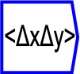
The operator can be placed on the canvas in two ways:
 ;
or
;
or
Computes the covariance of two tensors along named dimension. If the
inputs are of rank 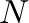 and 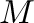 respectively, the output will be
a 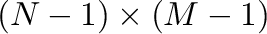 rank tensor, where the 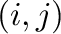 element is the
covariance of the  -th slice of the first argument along the named
dimension, and the 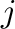-th slice along the named dimension. As such,
it is conformant with the definition of cov function in Octave,
but not with the equivalently named function in Matlab:
quoteCompatibility Note:: Octave always treats rows of X and Y as multivariate
random variables. For two inputs, however, MATLAB treats X and Y as
two univariate distributions regardless of their shapes, and will
calculate covariance whenever the number of elements in X and Y are
equal. This will result in a 2x2 matrix. Code relying on MATLAB's
definition will need to be changed when running in Octave.
If only a single argument
-th slice of the first argument along the named
dimension, and the 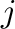-th slice along the named dimension. As such,
it is conformant with the definition of cov function in Octave,
but not with the equivalently named function in Matlab:
quoteCompatibility Note:: Octave always treats rows of X and Y as multivariate
random variables. For two inputs, however, MATLAB treats X and Y as
two univariate distributions regardless of their shapes, and will
calculate covariance whenever the number of elements in X and Y are
equal. This will result in a 2x2 matrix. Code relying on MATLAB's
definition will need to be changed when running in Octave.
If only a single argument  is supplied to the covariance, then
the result is equivalent to cov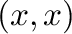, ie each slice is covaried
with each other slice.
is supplied to the covariance, then
the result is equivalent to cov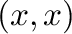, ie each slice is covaried
with each other slice.
The formula for covariance between stochastic variables and  is
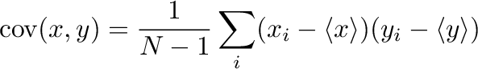
is
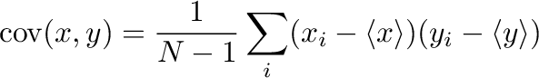